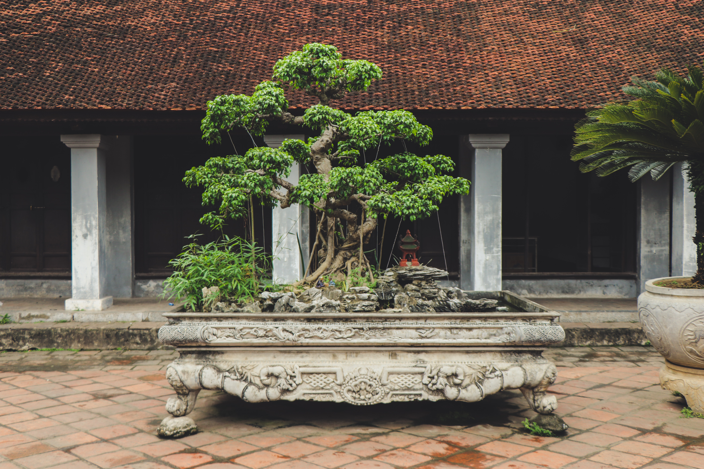
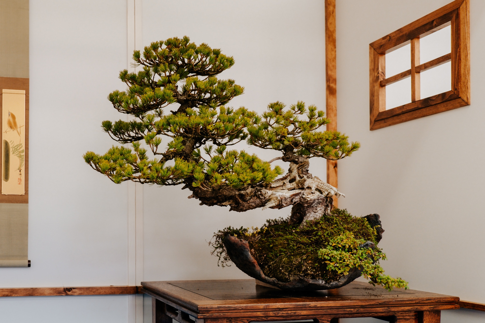
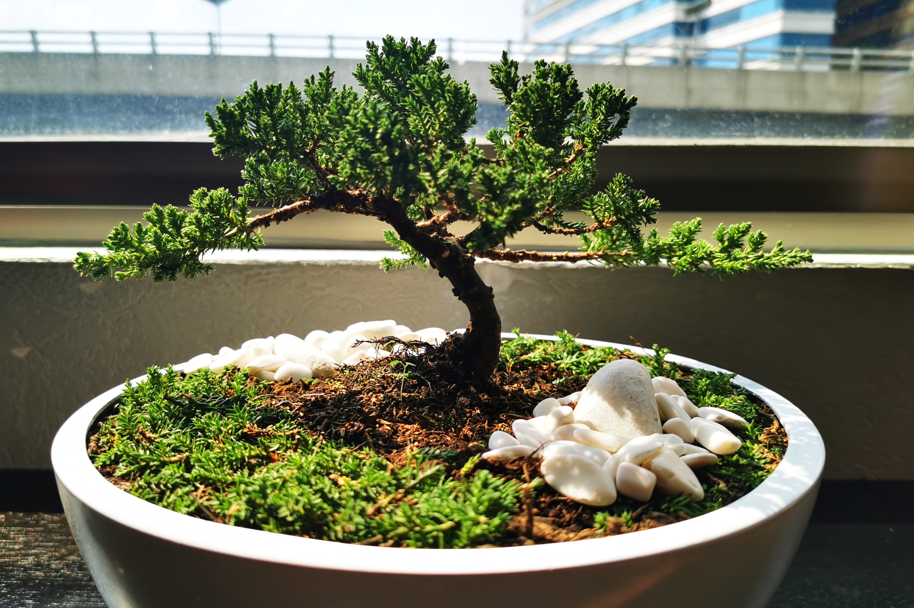

1/5

The ultimate goal of growing a Bonsai is to create a miniaturized but
realistic representation of nature encapsulated within a tree. It's noteworthy that
Bonsai trees aren't inherently genetically dwarfed; rather, any tree species can be
meticulously shaped and cultivated to form a stunning Bonsai creation.
2/5

The art of Bonsai offers a plethora of styles to choose from,
and they can be categorized in various ways. However, for the sake of establishing a solid foundation,
let us begin with the five basic forms, which are defined by the tree's angle of growth from a container.
This tree is in the Slanting Style - shakan.
3/5

This particular Bonsai tree showcases the Informal Upright Style - Moyogi.
It is the most popular Bonsai styles which depicts a tree in a natural setting,
having endured the forces of nature; therefore has a twisted trunk and sag branches.
Other basic styles include the Formal Upright Style - Chokan, which portrays a tree growing naturally in an open area without any physical stress.
The Semi-Cascade Style, known as Han-Kengai, and the Full Cascade Style - Kengai, feature trees that appear
to be hanging from the side of a cliff, either by the seashore or a riverbank.
4/5

A unique bonsai
5/5
A unique bonsai